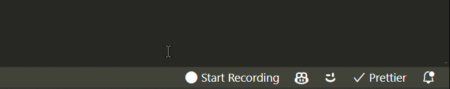

We introduce crowd-code, a VS Code/Cursor extension that allows anyone to participate in crowd-sourcing a software engineering dataset to eventually finetune models on. Install once, and forget about it.
Neural networks are simulators. Anything you want your model to do, you have to teach it. Base models represent the mean of the data distribution of the internet. Post-training permits shifting that distribution towards desired behaviours. The higher the required skill, the scarcer the corresponding data on the internet.
The most straightforward way to teach a model to do something is to give it a dataset to behaviour-clone off of. No software engineer in the world writes code linearly, in a single branch, in a single commit, in a single PR, without jumping around the codebase, without making mistakes, without debugging. crowd-code is our first attempt at capturing a broad spectrum of human software engineering, including character-level text insertions, deletions, undo, redo, cursor movement, file switches, jumping to function definitions, git checkouts, terminal command execution, autocompletes, LLM changes, and more.
2Every day, millions of developers are writing open-source code. We propose going beyond open-source and towards open-engineering, a paradigm where the value of the developer's time is not just captured by the code they produce, but also by the mere act of engineering.
We introduce crowd-code, a VS Code/Cursor extension that allows anyone to participate in crowd-sourcing a software engineering dataset to eventually finetune models on. We want to make it as easy as possible for developers to participate in crowd-sourcing. All you need to do is install the crowd-code extension, and forget about it.

The extension periodically uploads the user's captured IDE actions to a server, where they are cleaned, filtered, thoroughly anonymized, and periodically released to the public under the most permissive Creative Commons license (CC0). An ongoing recording is transparently indicated in the IDE's status bar, and can be stopped at any time. If the user has inserted sensitive data, they can simply press the 'panic button' in the status bar to remove the last actions from the recording before they even leave the user's machine. Additionally, the user is asked for consent to participate in crowd-sourcing upon extension installation, and can opt-out at any time. We take user privacy very seriously and welcome any feedback on how to make data collection and release more transparent.
Beyond behaviour-cloning on a dataset crowd-sourced using crowd-code, we eventually want to use crowd-code to annotate the entirety of IDE screencasts on the internet using an inverse dynamics model trained on screen recordings paired with crowd-code's IDE action annotations. This would unlock an entirely new trove of training data for software engineering agents.
We are excited to see what the community builds with this dataset. We want to democratize AI research. We are greater than the sum of our parts. Together.
FS worked on conceptualization of the project and implemented the IDE extension. MM implemented the server-side data collection pipeline. All authors contributed technically. FS wrote the manuscript. We thank Gemini Code Assist and Cursor for their help in writing the extension.